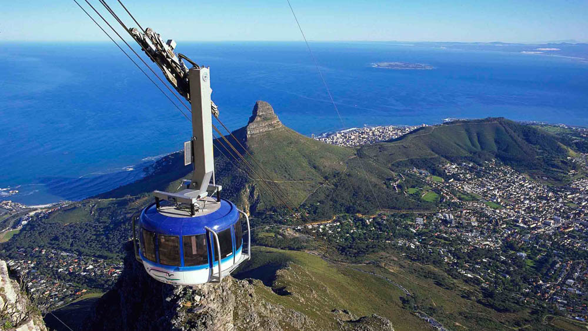
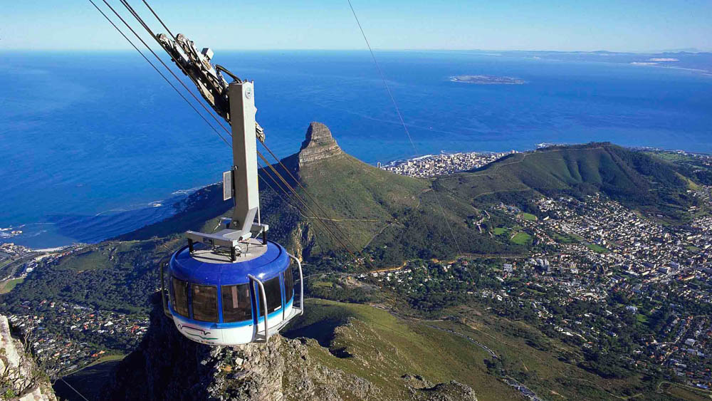

Cape Town is well known as the 2nd most popular city in South Africa.Also known as the Mother City,Cape Town is recognised for its harbour and landmarks such as Table Mountain and Cape Point.Cape Town also has nice beaches e.g Camps Bay along the sea coast.Next to the city of Cape Town is the famous Robben Island which durung Apartheid Nelson Mandela and other ANC leaders where imprisend for many of their lives.It now serves as a museum.Cape town has many activities to engage in like music,film,sports,water activities e.t.c
Table Mountain is a flat-topped mountain overlooking the city of Cape Town.It has attracted millions of visitors from and from out of the country.One can climed or use cableway to get to the top.Other activities to do in the mountain are:

It is a suburb in Cape Town on the west coast of the Cape Peninsula.It is a hot spot in the summer for locals and foreign visitors.Camps Bay beach is where one can calm down and cool of from the hot sun after exploring the city.Camps Bay has a few luxury hotels and guesthomes for travellers in need of hospitality and restuarants plus shops
Lions Head is a mountain located between Table Mountain and Signal Hill.The mountain peaks at 669 metres above sea level.The suburbs of the city surround the peak.The Mountain is known for its views and the 1 hour journey to the peak.
The hotels in and around Cape Town are of luxury standards with taget markets being foreign travellers as well as middle to high class citizens.They are located in a safe locatin with good security.Transport is available on hand.They are affordable even though they of high standards.
 
